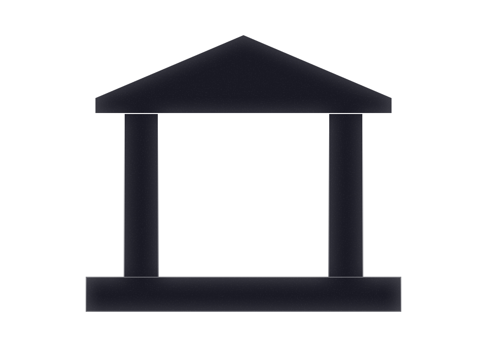
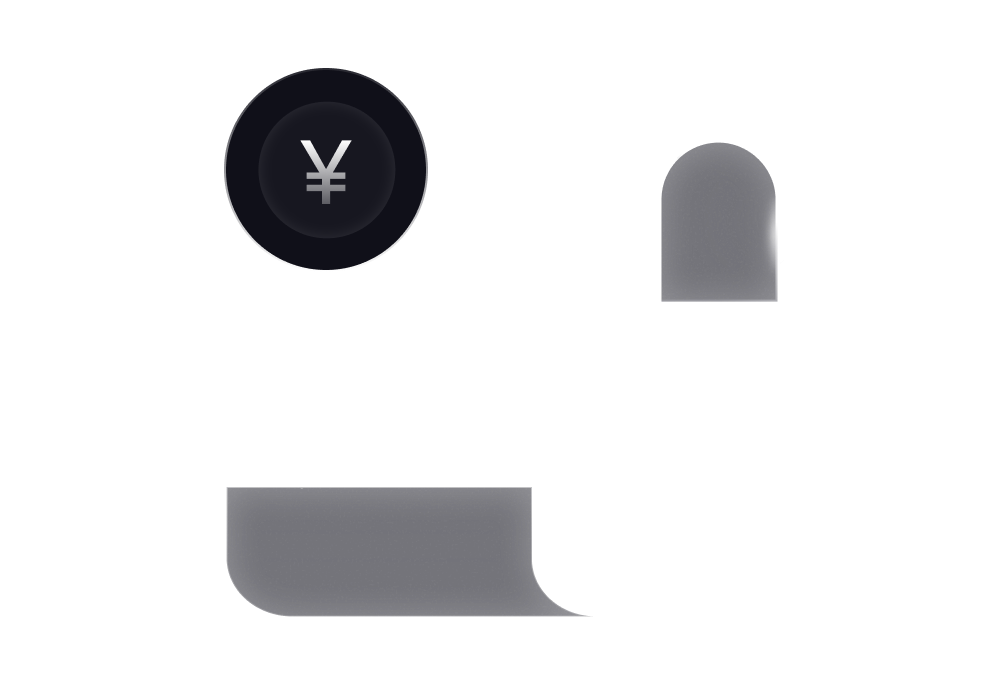

紹介
次世代金融を支えるステーブルコイン基盤
ネクスブリッジは、日本の規制に準拠したステーブルコインのためのプラットフォームとAPIスイートを提供しています。日本の信託銀行と連携し、安全な発行と法定通貨からステーブルコインへのシームレスな接続を実現します。国内外の発行者は、ネクスブリッジを活用して規制に準拠したステーブルコインを立ち上げ、管理し、スケールさせることで、次世代の金融アプリケーションを推進しています。
商品・サービス
企業向け規制準拠ステーブルコインスイート

ステーブルコイン発行プラットフォーム
設計から運用までをカバーするエンドツーエンドの円建てステーブルコイン発行サービス
- コンプライアンス＆アーキテクチャ：規制当局とのエンゲージメントおよびカスタマイズされた発行設計
- システム＆バンキング統合：コアバンキングと統合された独自の発行プラットフォーム
- セキュリティ＆オペレーション：安定性を確保するためのセキュリティ監査および継続的なモニタリング
流動性フラグメンテーション解決策
日本円・米ドルステーブルコイン市場における統合的かつ効率的な流動性
- 日本円インターオペラビリティ：複数の円建てステーブルコイン間でのシームレスな相互変換
- クロスカレンシーFX：日本円と米ドルステーブルコイン間の透明性とコンプライアンスを確保した交換
- 最良価格執行：最適な価格と流動性を確保するための集約ルーティング

総合的なカスタマイズソリューション
ステーブルコインの普及を拡大し、新たな機会を切り拓くためのテーラーメイド型サービス
- 利用ケースの拡大：決済、DeFi、越境取引における円建てステーブルコインの採用を拡大する
- グローバル発行体とローカルコンプライアンス：海外発行体の日本進出を全面サポート
- RWAサービス：実世界資産と円建てステーブルコイン基盤の統合を実現